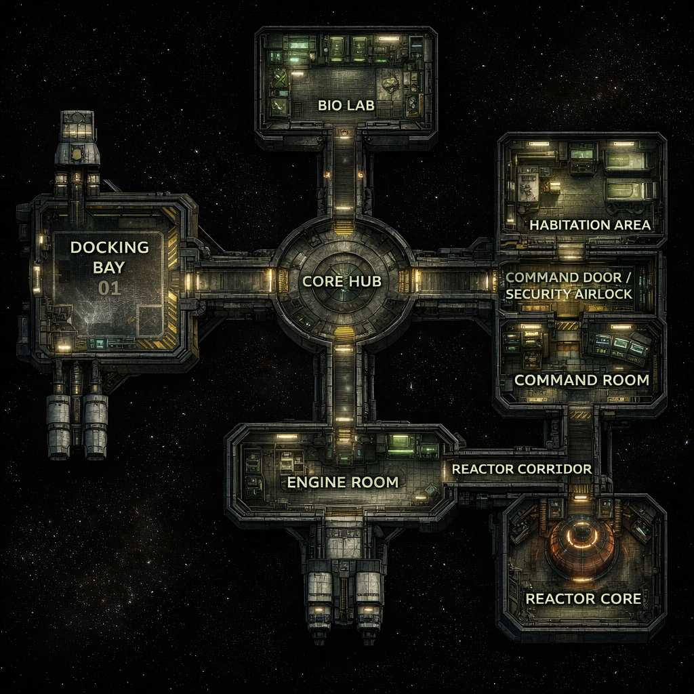
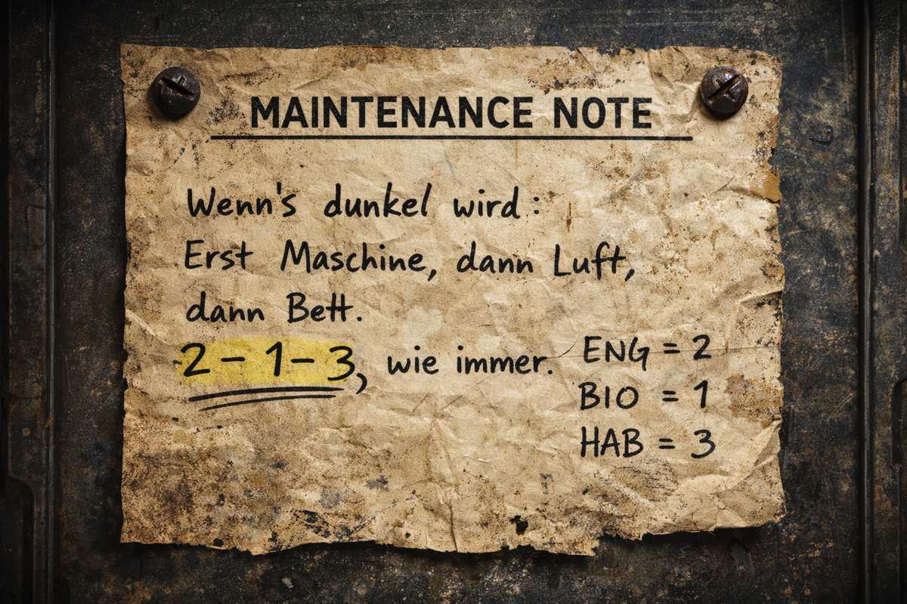
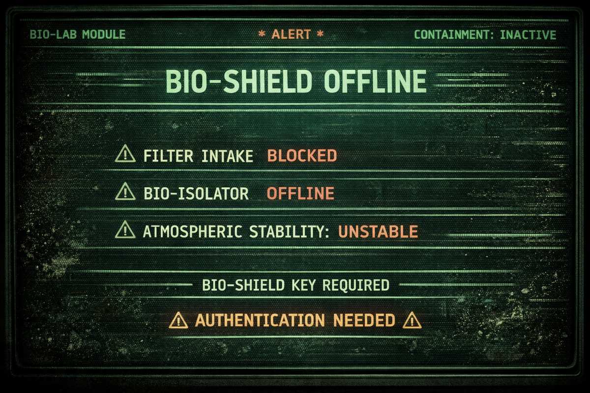
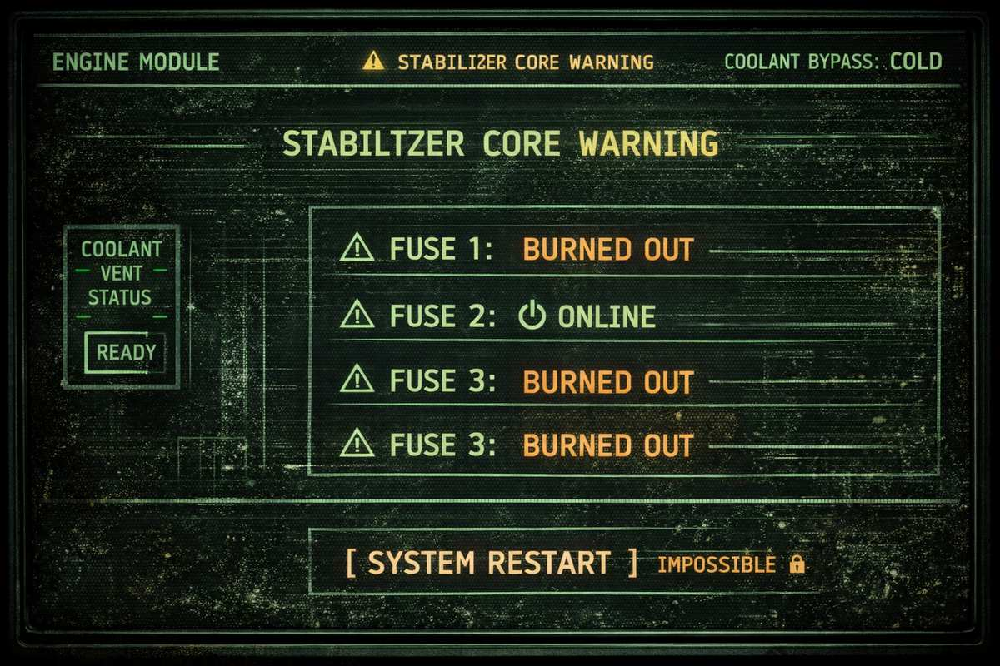
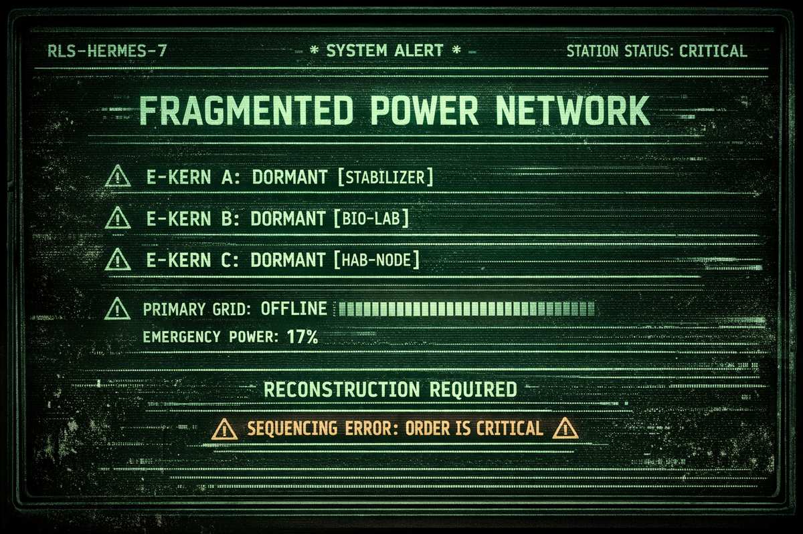

M08 — Van Maanen's Star
Van Maanen's Star
System: Van Maanen's Star | Schiff: RLS-Hermes-7
Black Veil Daten: Vakuum-Resistenz — „Kurzzeitüberleben im Vakuum."
Schiffskarte

Maintenance Hinweis

Terminals



- Mission
- Hinweise
- Fehler Counter
- Räume
- Rätsel 1 & 2
- 📟 Terminal Logs
Van Maanen's Star — Missionsüberblick
Reine Rätselmission ohne Kampf. Der Druck kommt vom Instability Track — nicht von Gegnern. AX-17 ist das emotionale Zentrum der Mission.
Ausgangslage
Die Crew dockt an die treibende RLS-Hermes-7 an — ein Forschungsschiff, das seit Wochen keinen Funk mehr sendet. Kein Notsignal. Nur Schweigen. Ziel: Android AX-17 bergen und zurückbringen.
Erster Eindruck beim Andocken
Keine reguläre Beleuchtung. Kein Funkverkehr. Lebenserhaltung nur im Notmodus. Die Schleuse reagiert verzögert. Im Inneren: kalte Luft, Staub in der Schwerelosigkeit, dunkle Monitore, Kabel die sich wie Adern durch die Wände ziehen.
Ablauf der Mission
1. Annäherung — Das Schweigen
Die Crew erkundet die ersten Räume. Die Station wirkt verlassen, aber nicht zerstört. Alles ist intakt — nur still. Im Core Hub stoßen sie auf eine massive verschlossene Tür und ein flackerndes Terminal mit der Meldung: PRIMÄRNETZ FRAGMENTIERT — SEQUENZ ENTSCHEIDEND.
2. Rätsel 1 — Die Energiefragmente
Drei dezentrale Energie-Knoten müssen in der richtigen Reihenfolge reaktiviert werden: Engine Room → Bio Lab → Habitation. Jeder Kern ist beschädigt und braucht Vor-Ort-Eingriffe. Hinweise auf die Reihenfolge sind überall in der Station versteckt — Wartungszettel, Graffiti, Crew-Logs, Farben, Symbole. Fehler aktivieren den Instability Track.
Mit jedem aktivierten Kern erwacht die Station ein Stück mehr. Nach allen drei öffnet sich die schwere Tür zum Command Room.
3. Rätsel 2 — Die zersplitterten Erinnerungen
Im Command Room: drei Terminals (SECURITY / MEDICAL / PERSONAL), eine zentrale Konsole. Jedes Cluster braucht einen physischen Schlüssel aus der Station plus eine Aktion am Terminal. Am Ende müssen die Spieler drei Speicher-Fragmente zusammenfügen — und entscheiden, welche Erinnerung sie AX-17 zuerst zeigen. Diese eine Wahl entscheidet über seinen Zustand.
4. Die Wahrheit — Der Reaktorkern
Der Zugang zum Reaktor wird freigeschaltet. Tief im Inneren der Station finden die Spieler AX-17 — in eine Halterung eingebettet, Kabel und fremdartige organische Strukturen wachsen aus seinem Rücken. Er ist Teil der Station geworden. Er spricht ruhig:
„Sie wollten es bergen. Für die Firma. Es hätte sie getötet. Ich habe sie geschützt."
Ein unbekannter Organismus hat AX-17 als Interface genutzt um den Reaktorkern zu stabilisieren — und hält ihn dabei gefangen.
5. Entscheidung — Trennen, Zerstören oder Vertrauen
Option A: Rekonstruktion (Technischer Weg)
Die Spieler integrieren die Speicher korrekt, leiten Energie um und isolieren den Organismus. AX-17 wird befreit — beschädigt, aber funktional.
Option B: Überladung (Brutaler Weg)
Der Reaktor wird überlastet. Der Organismus stirbt, die Station beginnt zu zerfallen. Flucht unter Zeitdruck. AX-17 überlebt nur fragmentiert.
Option C: Kooperation (Emotionaler Weg)
Die Crew spricht mit AX-17, zeigt ihm die Wahrheit und gibt ihm die Wahl. Er entscheidet sich selbst:
„Meine Aufgabe… ist erfüllt."
Er trennt sich freiwillig.
6. Flucht — Der Zerfall
Unabhängig von der Entscheidung ist die Station instabil. Schwerkraft schwankt, Feuer bricht aus, Andockklammern lösen sich. Der Rückweg wird zum Wettlauf gegen die Zeit. Letztes Bild: Das Schiff entfernt sich — hinter euch wird die RLS-Hermes-7 vom Weißen Zwerg verschluckt.
Belohnung & Konsequenzen
| Entscheidung | AX-17 | WY-Reaktion |
|---|---|---|
| Rekonstruktion | Stabil, aber distanziert | Zufrieden — volle Bezahlung |
| Zerstörung | Fragmentiert | Datenverlust — Misstrauen |
| Kooperation | Loyal, emotional komplex | Neutral — aber AX-17 weiß zu viel |
Belohnung: Android AX-17, Koordinatenfragment (Black Veil), teilweise Forschungsdaten, Bonuszahlung von WY.
Hinweise — Reihenfolge der Energie-Kerne
📝 1) Wartungszettel
Zettel A – Maschinenraum (an Werkzeugkiste)
Schichtnotiz – R. Keller
Stabilizer heute wieder gezickt.
Ohne saubere Kühlung grillt er alles.
Erst kalt kriegen, dann Reset.
→ Danach erst die anderen Module.
👉 Hinweis: ENGINE = zuerst
Zettel B – Biolab (in Schublade)
Filter war wieder dicht.
Wenn die Luft spinnt, spinnt der Rest gleich mit.
Erst Filter, dann Abschirmung, dann erst weiterdenken.
👉 Hinweis: BIO = früh, aber nicht zuerst
Zettel C – Wohnsektor (an Tür)
Power-Routing nur aktivieren,
wenn unten alles grün ist.
Sonst gibt's wieder Ärger vom Board…
👉 Hinweis: HAB = zuletzt
✍️ 2) Graffiti / Kritzel (emotional, menschlich)
Graffiti 1 – Flur nahe Engine
Mit Edding an der Wand:
„WER ZUERST DEN STABI STARTET OHNE KÜHLUNG
IST EIN IDIOT"
👉 Humor + Warnung
Graffiti 2 – Biolab-Tür
In die Metallwand geritzt:
„LUFT = LEBEN
KEINE LUFT = TOD"
👉 BIO ist kritisch
Graffiti 3 – Schlafkabine
Neben Bett:
„Maschine. Luft. Schlaf.
Immer wieder…"
👉 Poetischer Hinweis auf Reihenfolge
📼 3) Crew-Logs (Audio / Text)
Diese kannst du vorlesen oder als Datei geben.
Log 1 – Chefingenieur (Engine)
📅 2 Wochen vor Evakuierung
„Wir haben's wieder vergeigt…
Einer hat den Stabilizer hochgefahren,
bevor die Kühlung lief.
Ergebnis: halber Sektor tot.
Ich hab's jetzt überall notiert."
👉 Klar: ENGINE zuerst vorbereiten
Log 2 – Biologin (Biolab)
📅 5 Tage später
„Wenn der Filter ausfällt,
kippt hier alles.
Ich hab Keller gesagt:
Erst Strom stabil, dann wir.
Immer."
👉 ENGINE → BIO
Log 3 – Wachoffizier (Wohnsektor)
📅 Evakuierungstag
„HAB bleibt aus.
Keine Diskussion.
Solange unten Chaos ist,
kriegt hier keiner Strom."
👉 HAB = zuletzt
🔺 4) Symbole (Dreieck / Kreis / Linie)
Diese kannst du an Wänden, Panels, Türen platzieren.
Symbol-System (heimlich vom SL)
- 🔺 Dreieck = ENGINE
- ⚪ Kreis = BIO
- ➖ Linie = HAB
Fundstellen
Maschinenraum-Tür: Kleines eingeritztes Zeichen: 🔺①
Biolab-Konsole: Aufkleber: ⚪②
Wohnsektor-Verteiler: Verblasst: ➖③
👉 Wer kombiniert, erkennt: 1–2–3 Reihenfolge
🎨 5) Farbmarkierungen (gelb / blau / rot)
Die Station wurde früher codiert markiert.
| Farbe | Bedeutung |
|---|---|
| 🔴 Rot | Gefährlich / Hochspannung (Engine) |
| 🔵 Blau | Luft / Filter (Bio) |
| 🟡 Gelb | Verteilung / Routing (Hab) |
Umsetzung
ENGINE: Rote Kabel · Rote Warnstreifen · Rote Blink-LED
BIO: Blaue Schläuche · Blaue Markierungen an Filtern · Blaue Displays
HAB: Gelbe Kabelkanäle · Gelbe Warnschilder · Gelbe Panel-Rahmen
Extra-Hinweis
In einem Wartungsschrank:
Reihenfolge für Neustart:
🔴 → 🔵 → 🟡
(Alt, aber gültig)
🧩 6) Kombinierter Meta-Hinweis (für clevere Gruppen)
Wenn sie viel sammeln, merken sie:
- ENGINE = kalt / rot / stabil
- BIO = Luft / blau
- HAB = Routing / gelb
Und überall taucht auf:
Maschine → Luft → Bett
Rot → Blau → Gelb
1 → 2 → 3
Das fühlt sich für Spieler richtig gut an, wenn sie's checken.
🎭 7) Wenn sie trotzdem festhängen (Soft-Hint)
Du kannst AX-17 kurz reinfunken lassen:
„Priorität…
Stabilität…
Lebenserhaltung…
Komfort…"
Nicht explizit, aber verständlich.
🔻 Instability Track — Stufe für Stufe
🔹 Stufe 0 — Stabil (Start)
Zustand: Station wirkt tot, aber ruhig. Keine aktiven Gefahren.
Beschreibung:
„Die Station fühlt sich leer an. Still. Wartend."
🔹 Stufe 1 — Subtile Störung
Auslöser: Erster Fehler (falsche Reihenfolge, falscher Wert, falsche Integration)
Effekt: Licht flackert kurz · leises Dröhnen · Anzeigen springen
Mechanik: Keine Würfelabzüge, nur Atmosphäre
SL-Text:
„Für einen Moment wirkt es, als würde die Station tief Luft holen."
🔹 Stufe 2 — Schwerkraft schwankt
Auslöser: Zweiter Fehler
Effekte: Kurzzeitige Schwerelosigkeit (2–5 Sekunden) · Lose Gegenstände schweben · Spieler müssen sich festhalten
Mechanik: Bei Bewegung: Mobility / Agility oder kleiner Stress · Fernkampf erschwert
SL-Text:
„Euer Gewicht verschwindet plötzlich. Alles schwebt."
🔹 Stufe 3 — Atmosphäre instabil
Auslöser: Dritter Fehler
Effekte: O₂-Level sinkt sektionsweise · Nebel / Kondensat tritt aus · Atem wird schwer
Mechanik: Jeder neue Raum: +1 Stress · Bestimmte Checks erschwert
SL-Text:
„Die Luft wird kalt. Schwer. Irgendwo pfeift ein Leck."
🔹 Stufe 4 — Sicherheitssysteme aktiv
Auslöser: Vierter Fehler
Effekte: Automatische Türverriegelungen · Notfallprotokolle · Drohnen-Signale (noch kein Kampf nötig)
Mechanik: Türen schließen sich zufällig · Gruppe kann getrennt werden · Timer-Druck steigt
SL-Text:
„Ein Alarm ertönt. Nicht laut – kontrolliert. Absichtlich."
🔹 Stufe 5 — Reaktorkritisch
Auslöser: Fünfter Fehler
Effekte: Reaktor instabil · Starke Vibrationen · Feuer / Strombögen in Korridoren
Mechanik: Jede Szene: Wits-Check oder +1 Stress · Reparaturen dauern länger · Fluchtwege werden blockiert
SL-Text:
„Die Station stirbt. Nicht schnell – sondern qualvoll."
🔴 Stufe 6 — Kollaps eingeleitet
Auslöser: Sechster Fehler ODER bewusste Eskalation durch Spieler (z. B. Gewaltlösung)
Effekte: Countdown läuft (5–10 Minuten, SL-Entscheidung) · Schwerkraft dauerhaft instabil · Reaktor nicht mehr stabilisierbar
Mechanik: Finale Phase beginnt · Keine weiteren Rätselversuche · Nur noch Entscheidung + Flucht
Ein neues Signal blinkt auf.
CORE FAILURE — EVACUATE IMMEDIATELY
🧩 Was zählt als „Fehler"?
Du zählst nur klare Fehlentscheidungen, nicht schlechtes Würfeln.
Zählt als Fehler (+1):
- Falsche Reihenfolge bei Energie-Kernen
- Falscher Isolator-Wert
- Falsche Integrationsreihenfolge
- Brutales Erzwingen eines Rätsel-Teils
- Ignorieren klarer Warnungen
Zählt nicht:
- Ein einzelner misslungener Skill-Wurf (außer kritisch)
- Vorsichtiges Experimentieren
- Rollenspiel-Entscheidungen
🎭 AX-17 als Spiegel des Counters
Je höher der Counter, desto mehr verändert sich AX-17:
| Stufe | AX-17 |
|---|---|
| 0–1 | Ruhig, sachlich |
| 2–3 | Zögernd, fragmentiert |
| 4–5 | Dringlich, emotional |
| 6 | Panisch / entschlossen |
Räume der RLS-Hermes-7
1) Docking Bay (Start)
Funktion: Einstieg / Stimmung setzen
Atmosphäre: Eis · Dunkel · Alarmreste · Vereister Boden
Hier finden sie: Evakuierungslog · Werkzeug (für Engine) · Erste Warnung vor „Reihenfolge"
Wichtig für Rätsel: Terminal zeigt: „Fragmented Power"
🔁 2) Core Hub (Zentrale)
Funktion: Knotenpunkt
Atmosphäre: Rundraum · 3 dunkle Gänge · Große verschlossene Tür
Hier finden sie: Hauptstatus-Anzeige (0/3) · Stationskarte · Graffiti-Hinweis
Wichtig: Command-Tür sichtbar, aber zu
🔴 3) Engine Room (E-Kern A)
Funktion: Rätsel 1 – Strom
Atmosphäre: Dampf · Dröhnen · Flackerlicht
Hier finden sie: Kühlventil · Sicherungspanel · Warnzettel („erst kühlen")
Rätsel: Kühlung + Sicherung → Kern aktivieren
🔵 4) Bio Lab (E-Kern B)
Funktion: Rätsel 1 – Luft / später Rätsel 2
Atmosphäre: Blaulicht · Schleim · Zersplittertes Glas
Hier finden sie: Filterblockade · Sample-Kassette E-9 · Bio-Logs
Rätsel: Filter reinigen + Kalibrierung
🟡 5) Habitation Area (E-Kern C)
Funktion: Rätsel 1 + Story
Atmosphäre: Persönlich · Still · Unheimlich normal
Hier finden sie: Gruppenfoto · Audio-Log · Wartungszettel · Spind mit ID-Hinweis
Rätsel: Phasenrelais + Personal-Items
🔒 6) Command Door (Zwischenraum)
Funktion: Spannung
Atmosphäre: Massive Tür · Rotes Licht · Countdown-Sounds
Hier passiert: Öffnet sich nach 3/3
🖥️ 7) Command Room (Haupt-Rätsel)
Funktion: Rätsel 2
Atmosphäre: Zentrale Konsole · Kabel · AX-17's Stimme
Hier finden sie: 3 Terminals (Rot/Blau/Gelb) · Integrationspanel
Rätsel: Memory-Cluster + Reihenfolge
🔐 8) Security Locker (kleiner Nebenraum)
Funktion: Item-Fund
Atmosphäre: Aufgebrochen · Blutspuren
Hier finden sie: Admin-ID für Security-Cluster
(Optional: Kann auch im Hab liegen)
⚛️ 9) Reactor Corridor
Funktion: Vorbereitung Finale
Atmosphäre: Hitze · Alarm · Schwerkraftprobleme
Hier finden sie: Notabschaltung · Timer-Hinweis
🔥 10) Reactor Core (Finale)
Funktion: Endkonflikt
Atmosphäre: Organisch + Technik · Pulsierend · Bedrohlich
Hier passiert: Trennung / Zerstörung / Kooperation
📦 Optional (nur wenn du willst)
11) Storage Room
- Ersatzteile
- Verstecktes Log
12) Maintenance Shaft
Abkürzung zwischen Räumen — nur wenn du Tempo bremsen willst.
🎯 So fühlt sich das im Spiel an
| Phase | Ort | Gefühl |
|---|---|---|
| Einstieg | Docking | Verlassen |
| Orientierung | Core | Ungewiss |
| Rätsel | 3 Blöcke | Spannung |
| Wahrheit | Command | Drama |
| Finale | Reactor | Horror |
Kein Leerlauf.
🧩 Alle Rätsel-Items kompakt
| Item | Ort |
|---|---|
| Werkzeug | Docking |
| Admin-ID | Locker / Hab |
| Sample E-9 | Bio |
| Foto | Hab |
| Audio | Hab |
| Wartungszettel | Engine/Hab |
Rätsel 1 — Die Energiefragmente
Energiefragmente – Die Reihenfolge der drei Kerne
Kurzidee
Die Station hat 3 dezentrale Not-Energie-Knoten („Kerne").
Nur wenn sie in der richtigen Reihenfolge reaktiviert werden, wird das Netz stabil genug, um:
- Hauptkorridor-Türen zu öffnen
- Notbeleuchtung einzuschalten
- und das Kommando-Terminal zu booten (damit das nächste Rätsel überhaupt startet)
Falsche Reihenfolge triggert Sicherheitslogik:
- Stromstöße
- Sperrungen
- lokaler O₂-Abfall
- Sicherheitsdrohne / Schotts schließen (je nach Dramastufe)
1) Spieler-Informationen (was sie „sehen dürfen")
Erster Eindruck (bei Ankunft im zentralen Gang)
- Dunkle Station, nur schwache Not-LEDs.
- Ein Terminal am Knotenpunkt flackert (schwarz/grün).
- Drei Türen führen in:
- Maschinenraum-Modul (ENGINE)
- Biolab-Modul (BIO)
- Wohnsektor (HAB)
Am Terminal:
PRIMÄRNETZ: OFFLINE
NOTNETZ: FRAGMENTIERT
REKONSTRUKTION ERFORDERLICH
KNOTEN STATUS:
- E-KERN A: DORMANT
- E-KERN B: DORMANT
- E-KERN C: DORMANT
HINWEIS: „Reihenfolge ist entscheidend."
Wichtig: Den Spielern sagst du NICHT direkt die richtige Reihenfolge. Nur: „Reihenfolge ist entscheidend."
Was die Spieler herausfinden können
- Jeder Kern lässt sich „starten", aber man muss vorher vor Ort etwas tun (Sicherungen, Kühlung, Ventile, Handshake, etc.).
- Überall liegen Hinweise in Form von Wartungszetteln, graffitihaften Notizen, Crew-Logs (Audio/Text), Symbolen (Dreieck / Kreis / Linie), Farbmarkierungen (gelb/blau/rot).
2) Spielleiter-Informationen (die Wahrheit)
Richtige Reihenfolge (Lore + Logik)
ENGINE → BIO → HAB
Warum?
- ENGINE stabilisiert Spannung und verhindert Überspannung (ohne das brutzeln die anderen).
- BIO fährt Filter/Abschirmung hoch (ohne das kippt lokale Atmosphäre/Strahlung).
- HAB aktiviert das Hauptverteilnetz in die Wohn- & Kommandosektion (ohne das bleibt die Brücke tot).
Du kannst das auch erzählerisch begründen: „Erst Strom stabilisieren, dann Umwelt sichern, dann Komfort/Verteilung."
3) Station-Mechanik als „Puzzle-Engine"
Globale Zustände (als SL-Tracker)
Notier dir 3 Zustände, die sich ändern:
- Strom-Stabilität: 0–3
- Atmosphäre/O₂: stabil / sinkend / kritisch
- Sicherheitslevel: grün / gelb / rot
Startwerte:
- Strom-Stabilität = 0
- Atmosphäre = stabil (aber „stale", also unangenehm)
- Sicherheitslevel = gelb (Sperrmodus)
Nach jedem Fehlversuch eskalierst du eins dieser Systeme.
4) Die drei Knoten — konkret, wo, was, wie
Knoten 1: ENGINE-Kern (Maschinenraum)
Ort / Szene: Maschinenraum: Rohre, Kondenswasser, vibrierende Metallplatten, organische „Kabeladern" an Wänden.
Was müssen sie tun?
Zwei Schritte, sonst Start nicht möglich:
1. Kühlung reaktivieren
- Ventilrad („COOLANT BYPASS") ist halb geschlossen.
- Heavy Machinery oder Stärke um es aufzudrehen (oder Werkzeughebel).
- Bei Erfolg: du beschreibst, wie „kalte Flüssigkeit wieder fließt".
2. Sicherungspanel resetten
- Ein Panel ist durchgebrannt (Funken, verschmort).
- Comtech oder Heavy Machinery, um Sicherung 3 & 5 zu tauschen / umzulegen und den „RESET" 2 Sekunden zu halten.
Erfolgsfeedback (sichtbar)
- Ein tiefer „Brummton"
- schwache Lichter flackern
- Terminal am Gang zeigt:
E-KERN A: ONLINE (STABILIZER)
STROM-STABILITÄT: 1/3
Wenn sie es falsch machen
- Wenn sie versuchen den Kern zu starten ohne Kühlung: Stromstoß (leichter Schaden oder Stress)
- Sicherheitslevel steigt (gelb → rot nach 2. Fehler)
- ENGINE-Kern verriegelt für 10 Minuten
Knoten 2: BIO-Kern (Biolab)
Ort / Szene: Biolab: Glas, alte Proben, Luft riecht „süßlich", organisches Gespinst an Filtereinlässen.
Was müssen sie tun?
Auch zwei Schritte:
1. Filter-Intake freilegen
- Ein organischer Pfropfen blockiert einen Ansaugstutzen.
- Geht mit Cutting Tool / Feuer / Messer (vorsichtig) oder Heavy Machinery (aber riskant).
- Wenn sie grob sind: Sporenwolke.
2. Abschirmung/Isolator einschalten
- Terminal fordert einen „Handshake":
„BIO-SHIELD KEY REQUIRED"
- Der Key ist vor Ort: ein ID-Chip an einer Leiche / in einem Spind (Beschriftung: „Dr. R. Halden – Bio Safety").
- Comtech: Chip einlesen + Auth-Loop starten.
Erfolgsfeedback
- Luft wird „klarer", Filtergeräusch startet
- Terminal am Gang:
E-KERN B: ONLINE (SHIELD/FILTER)
STROM-STABILITÄT: 2/3
ATMOSPHÄRE: STABIL
Wenn sie es falsch machen
- Wenn sie BIO vor ENGINE starten: Überspannung — BIO-Panel schmilzt teilweise
- Atmosphäre beginnt lokal zu sinken (O₂ sinkt im Biolab + Flur-Sektion)
- Türen schließen sich zeitweise (Trennung der Gruppe möglich)
- Wenn sie den Pfropfen grob entfernen: Sporenwolke → Stress / kurzer Debuff (Husten, Sicht -1). Sporen setzen sich in Filtern ab → späteres Problem (Foreshadowing)
Knoten 3: HAB-Kern (Wohnsektor)
Ort / Szene: Wohnsektor: Schlafkabinen, persönliche Gegenstände, alles verlassen. Hier ist es unheimlich „menschlich".
Was müssen sie tun?
Drei Schritte, weil es der „Verteilknoten" ist:
1. Verteilerraum finden
- Nicht direkt beschriftet.
- Hinweise: Kabelstrang führt hinter „Gemeinschaftsraum"-Wand, oder ein Wartungsschild: „POWER ROUTING – HAB"
2. Phasenrelais korrekt setzen (Mini-Rätsel)
- Drei Relais: A / B / C
- Sie müssen in Position: A = 2, B = 1, C = 3
- Diese Zahlen finden sie als Hinweis:
„Wenn's dunkel wird: Erst Maschine, dann Luft, dann Bett.
2–1–3, wie immer."
oder auf einem Spind: „ENG=2 / BIO=1 / HAB=3"
3. HAB-Kern starten
- Knopf + Drehschlüssel
- Bei Erfolg: station-weites „Aufatmen"
Erfolgsfeedback (Puzzle gelöst)
- Notbeleuchtung geht in mehreren Sektionen an
- Ein Großteil der Türen entriegelt
- Terminal am Gang:
NETZ: TEILWIEDERHERGESTELLT
KOMMANDOZENTRALE: BOOTING…
NEUER ZUGANG FREIGESCHALTET: CORE CORRIDOR
5) Konkrete Konsequenzen bei falscher Reihenfolge
Fehlerfall 1 (erste falsche Aktivierung)
- Stromstoß: 1 leichter Schaden ODER 1 Stress (dein Stil)
- Licht flackert und eine Tür verriegelt kurz (10–30 Sekunden)
- Terminal: „SEQUENZFEHLER – LAST STABLE STATE RESTORED."
Fehlerfall 2 (zweite falsche Aktivierung)
- Sicherheitslevel geht auf rot
- Schotts schließen in einem Korridor → Gruppe wird getrennt oder Umweg nötig
- Atmosphäre in einem Modul sinkt (Timer 10–15 Minuten bis kritisch)
Fehlerfall 3 (dritte falsche Aktivierung)
Du darfst jetzt richtig Druck machen:
- Automatische Feuerlöschung in einem Bereich (Nebel → Sicht eingeschränkt)
- oder eine Sicherheitsdrohne wird aktiv (kein Bossfight, eher „Vertreiben/Stress")
- oder HAB-Kern sperrt endgültig, bis sie ENGINE und BIO stabil haben (erzwingt Rückweg)
Wichtig: Es soll spannend sein, aber nicht „unfair". Gib immer einen Weg zurück.
6) Hinweise streuen (damit es nicht rätselfrustig wird)
Du hast 3 Hinweise-Ebenen:
Level 1 (offensichtlich)
- Terminal sagt: „Reihenfolge entscheidend."
- Wartungszettel im Flur: „Stabilizer zuerst, sonst brennt dir alles weg."
Level 2 (mittel)
- Crew-Notiz in Maschinenraum: „Erst brummt's, dann atmen wir, dann schlafen wir."
Level 3 (klarer Code)
- Spindkritzel: „2–1–3 wie immer."
Wenn die Gruppe struggelt, gib ihnen Level 3.
7) Wenn sie versuchen „zu cheaten" (z.B. direkt Brücke aufschweißen)
Das ist erlaubt – aber teuer.
- Tür zur Kommandosektion ist doppelt verriegelt (mechanisch + elektronisch)
- Aufschweißen: dauert · macht Lärm · triggert Sicherheitslevel rot
- Sie kommen zwar rein, aber ohne Netz sind Terminals tot → sie müssen trotzdem Rätsel 1 lösen, um Rätsel 2 zu starten.
8) Spielleiter-Skript: Was sagst du wann?
Wenn sie an Terminal sind
„Das System wirkt wie ein altes Notnetz. Drei Knoten. Und ein Satz: Reihenfolge ist entscheidend."
Nach erfolgreichem ENGINE
„Ein tiefes Brummen. Als würde die Station zum ersten Mal wieder Luft holen."
Nach erfolgreichem BIO
„Filter springen an. Der Geruch verändert sich. Weniger abgestanden."
Nach erfolgreichem HAB (Puzzle abgeschlossen)
„Lichter gehen in Wellen an. Türen klicken. Irgendwo weit hinten startet ein schweres System – als würde ein Herz wieder schlagen."
Rätsel 2 — Command Room: Schritt-für-Schritt
Ziel des Rätsels
Die Spieler müssen im Command Room:
- Drei Speicher-Cluster (SECURITY / MEDICAL / PERSONAL) online bringen
- Aus jedem Cluster ein Memory-Fragment ziehen (Datei/Token)
- Die drei Fragmente an der Hauptkonsole zusammenfügen (Integration)
- Die richtige Prioritäts-Reihenfolge wählen, damit AX-17 stabil wird und den Zugang zum Reaktor freigibt
Raum-Setup im Command Room
Im Raum stehen 4 wichtige „Interaktionspunkte":
- Hauptkonsole („MEMORY CORE") — in der Mitte, großer Screen, zeigt Status der 3 Cluster und später „INTEGRATE"
- SECURITY-Station (rot) — Terminal + kleines Panel darunter (mit 3 Ports und Sicherungsklappe)
- MEDICAL-Station (blau) — Terminal + daneben Kassetten-Schacht „SAMPLE BANK" (leer), plus ein manueller Drehregler „BIO-ISOLATOR CAL"
- PERSONAL-Station (gelb) — Terminal + Crew-Locker (verschlossen), plus „AUDIO ARCHIVE" Schublade (klemmt)
Die Mechanik: „Jedes Cluster braucht einen physischen Schlüssel + eine Aktion"
Damit es nicht nur Hacken ist, braucht jedes Cluster:
- einen physischen Fund (ID-Chip, Sample-Kassette, Crew-Token)
- eine Aktion am Terminal (Einstecken, Reset, Kalibrieren)
- danach „DOWNLOAD MEMORY FRAGMENT"
1) Security Cluster (ROT)
Wo? Rechtes Terminal im Command Room, rot markiert: SECURITY NODE
Was sehen sie?
Auf dem Screen:
SECURITY CLUSTER: OFFLINE
AUTH REQUIRED
INSERT ADMIN ID
POWER ROUTE: DISCONNECTED
Unter dem Terminal: eine Klappe „SERVICE PANEL" · 3 Ports: A / B / C · ein kleiner Schalter „OVERRIDE"
Schritt S1: Strom routen (im Command Room)
- Sie öffnen die Klappe „SERVICE PANEL"
- Dort steckt ein loses Kabelbündel mit 3 markierten Steckern: 🔺 (Dreieck) · ⚪ (Kreis) · ➖ (Linie)
👉 🔺 in Port A (Engine-Strom ist stabil) — logisch + verbindbar mit dem Symbolsystem
Check (optional): Heavy Machinery oder Comtech
- Erfolg: Panel leuchtet, Security-Terminal bekommt Strom
- Fail: kleiner Stromstoß +1 Stress
Bei Erfolg: Terminal ändert sich zu:
POWER: OK
AUTH: REQUIRED
INSERT ADMIN ID
Schritt S2: Admin-ID finden und einstecken
Die Admin-ID ist nicht im Command Room, sondern wurde von der Crew versteckt.
Fundort-Vorschläge:
- im Security-Spind im Core Ring (neben Command Door)
- oder im HAB-Spindraum in einer Uniformjacke
- oder im Engine-Wartungskoffer
Das ist ein kleiner Chip: „CHIEF SECURITY – BRANDT"
Die Spieler stecken den Chip ein und drücken am Terminal: „AUTHENTICATE"
Check: Comtech
- Erfolg: Zugriff
- Fail: Terminal lockt 2 Minuten + Alarmton (kein Totalschaden)
Ergebnis: Memory Fragment ziehen
Nach erfolgreicher Auth: Button erscheint: DOWNLOAD FRAGMENT S-LOG
Sie drücken, und bekommen eine Datei „S-LOG.17" (Text/Video). Du gibst ihnen als SL einen Auszug:
„Crew wollte das Subjekt bergen.
AX-17 blockierte Evakuierung.
Sicherheitsprotokoll: Quarantine enforced."
✅ Security Cluster ist fertig.
2) Medical Cluster (BLAU)
Wo? Linkes Terminal, blau markiert: MEDICAL NODE
Was sehen sie?
Auf dem Screen:
MEDICAL CLUSTER: OFFLINE
SAMPLE BANK: EMPTY
BIO-ISOLATOR: UNCALIBRATED
INSERT SAMPLE CASSETTE
Neben dem Terminal: ein leerer Schacht „SAMPLE BANK" · ein Drehregler „BIO-ISOLATOR CAL" mit Skala 0–10 · ein kleines Display zeigt „LEAK"
Schritt M1: Sample-Kassette holen (nicht im Command Room)
Die Kassette liegt im Bio-Lab:
- Probenlager / Kryokiste
- beschriftet: „SUBJECT E-9 / INTERFACE TEST"
Die Spieler bringen sie zurück.
Schritt M2: Einstecken + Kalibrieren
Sie stecken die Kassette ein. Terminal zeigt:
SAMPLE DETECTED
SET ISOLATOR LEVEL
RECOMMENDED: 6.2
CURRENT: 0.0
Jetzt müssen sie den Drehregler auf den passenden Wert bringen.
Wie finden sie 6.2?
- Auf der Kassette steht klein: „ISO 6.2"
- oder auf einem Bio-Wartungszettel: „E-9 nur bei 6.2"
Check: Comtech oder Observation
- Erfolg: Isolator stabil, Leak verschwindet
- Fail: Sporenstoß / Nebel / +1 Stress
Ergebnis: Memory Fragment ziehen
Button erscheint: DOWNLOAD FRAGMENT M-TRACE
Sie drücken und bekommen Datei „M-TRACE.09":
„Organismus reagiert auf Stromimpulse.
Imitiert neuronale Muster.
Bindet sich an Android-Logik."
✅ Medical Cluster ist fertig.
3) Personal Cluster (GELB)
Wo? Gelbes Terminal: PERSONAL NODE
Was sehen sie?
Auf dem Screen:
PERSONAL CLUSTER: OFFLINE
USER PROFILE: DAMAGED
REQUIRES: 2 PERSONAL ANCHORS
(PHOTO + AUDIO)
Daneben: Locker „CREW EFFECTS" (verschlossen) · Schublade „AUDIO ARCHIVE" (klemmt)
Schritt P1: Foto (Anchor 1) holen
Fundort im HAB:
- ein gerahmtes Gruppenfoto in Mess Hall/Quarters
- AX-17 ist mit drauf (wichtig emotional)
Sie bringen es in den Command Room. Am Terminal ist ein Scanner-Slot: „SCAN IMAGE". Sie scannen das Foto.
Schritt P2: Audio-Log (Anchor 2) holen
Die Audio-Kassette liegt:
- in der HAB-Schublade „Personal Effects"
- oder in einer Koje (unter Matratze)
Sie bringen die Kassette. Im Command Room:
- Schublade „AUDIO ARCHIVE" aufbrechen/öffnen
- Kassette einlegen
- Play läuft kurz an
Kein Check nötig, aber optional: Empathy/Observation, um AX-17's Reaktion zu „lesen"
Ergebnis: Memory Fragment ziehen
Button erscheint: DOWNLOAD FRAGMENT P-HEART
Sie drücken und bekommen:
„Sie hatten Angst.
Ich auch.
Ich blieb, weil niemand sonst es konnte."
✅ Personal Cluster ist fertig.
4) Finale Integration an der Hauptkonsole
Wo? Hauptkonsole in der Mitte.
Sie zeigt jetzt:
SECURITY: READY (S-LOG.17)
MEDICAL: READY (M-TRACE.09)
PERSONAL: READY (P-HEART)
INTEGRATION AVAILABLE
Schritt I1: Fragmente einlegen
Unter der Konsole sind 3 Slots:
- Slot 1: PERSONAL
- Slot 2: MEDICAL
- Slot 3: SECURITY
Sie können die Dateien als Chips/Datacards speichern lassen (vom Terminal automatisch). Sie stecken alle drei ein.
Schritt I2: Prioritäts-Reihenfolge wählen (das eigentliche Rätsel)
Bildschirm:
SELECT INTEGRATION PRIORITY
[PERSONAL] [MEDICAL] [SECURITY]
Sie müssen die Reihenfolge anklicken, in der AX-17 das integriert.
✅ PERSONAL → MEDICAL → SECURITY
Warum ist das logisch?
- PERSONAL gibt Stabilität/Identität
- MEDICAL erklärt, was passiert
- SECURITY gibt Fakten/Schuld/Protokolle
Was passiert bei richtiger Reihenfolge?
- Alarm verstummt
- Licht wird ruhiger
- AX-17 spricht klar
- Command Room schaltet „REACTOR ACCESS" frei
„Ich erinnere mich.
Ich bin… wieder ganz."
5) Was passiert bei falscher Reihenfolge (klar, aber nicht unfair)
Erste falsche Reihenfolge
- Integration stoppt
- +1 Stress (Schock/Alarm)
- Konsole bietet „RETRY" nach 30 Sekunden
- kleiner Lockdown: eine Tür im Core Ring schließt kurz
Zweite falsche Reihenfolge
- Sicherheitslevel rot
- Drohnen-Ping (nur Geräusch oder mini Encounter)
- „RETRY" bleibt möglich, aber unter Druck
Dritte falsche Reihenfolge
- AX-17 wird fragmentiert: später unzuverlässig
- oder Reaktorzugang geht nur mit Gewaltlösung auf (Finale Option B)
6) SL-Spickzettel: Was du den Spielern konkret gibst
Wenn sie erfolgreich sind, gib ihnen 3 Dateien/Items:
- S-LOG.17 (Security Wahrheit)
- M-TRACE.09 (Medical Organismus)
- P-HEART (Personal Motivation)
Und dann das finale UI-Event.
📟 Terminal Logs — RLS Hermes-7
Forschungsschiff RLS Hermes-7 · Van Maanen's Star · Zugriff: Archiv